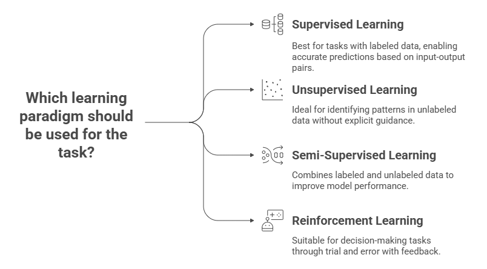
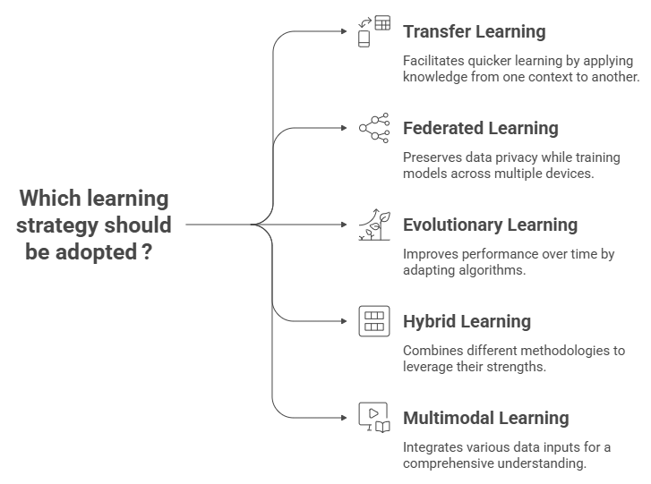
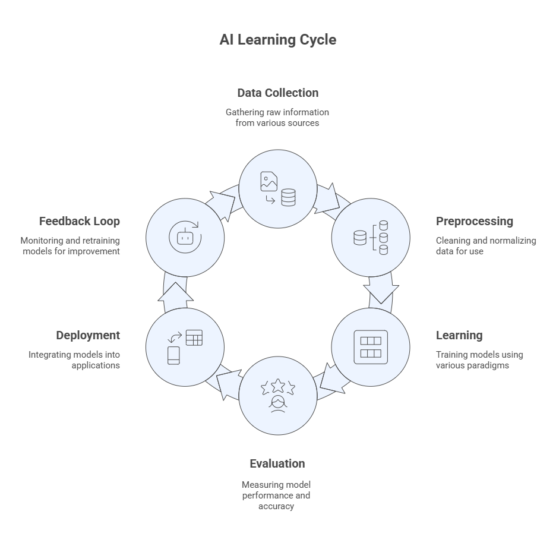

Module 3 — How Machines Learn#
Artificial Intelligence becomes truly intelligent when machines can learn from experience.
This module explores how computers acquire knowledge, adapt to data, and improve their performance over time.
It follows the two parts presented in the recorded video and slides: Learning Paradigms and Learning Strategies.
Learning Objectives#
After completing this module, you will be able to:
Understand and explain the different paradigms and strategies for learning machines and how they differ from traditional programming.
Distinguish among the main learning paradigms — supervised, unsupervised, semi-supervised, and reinforcement learning.
Describe key learning strategies, such as federated learning, transfer learning, evolution, hybrid and multi-modal learning.
Part I — Learning Paradigms#
The way a machine learns depends on the type of information available and the goal of the learning process.
Machine Learning can be categorized into four main paradigms: supervised, unsupervised, semi-supervised, and reinforcement learning.
1.1 Supervised Learning#
The most common and well-understood paradigm.
The model learns from labeled data — examples where the desired output (target) is known.
Objective: find a function that maps inputs (features) to outputs (labels).
Examples:
Predicting house prices (regression)
Classifying emails as spam or not spam (classification)
Supervised learning mirrors learning by example — the machine imitates patterns it has seen before.
Popular algorithms: Linear Regression, Decision Trees, Random Forests, Support Vector Machines, Neural Networks.
1.2 Unsupervised Learning#
Works with unlabeled data — the algorithm must find structure or patterns on its own (statistical regularities in the data).
Objective: discover hidden relationships or group similar data points.
Examples:
Customer segmentation
Topic discovery in text
Dimensionality reduction and visualization
Common techniques: Clustering (K-Means, DBSCAN, Hierarchical), Association Rules, Principal Component Analysis (PCA).
Unsupervised learning is about exploration — letting the data reveal its own organization.
1.3 Semi-Supervised Learning#
Combines small amounts of labeled data with large amounts of unlabeled data.
Bridges the gap between supervised and unsupervised approaches.
Useful when labeling is expensive or time-consuming (e.g., medical images, legal documents).
Example: using a few labeled samples to train a model that then labels the rest automatically.
Key methods: Self-training, Co-training, Graph-based learning.
Semi-supervised learning reflects a realistic compromise — humans label some data, AI learns the rest.
1.4 Reinforcement Learning (RL)#
Inspired by behavioral psychology — learning through trial and error and feedback from the environment.
An agent interacts with an environment, performing actions and receiving rewards or penalties.
Goal: learn a policy that maximizes long-term rewards.
Sample applications: game playing (AlphaGo), robotics, autonomous driving, resource management.
Core components:
Agent → Learner/decision-maker
Environment → Context of interaction
State → Current situation
Action → Possible moves
Reward → Feedback signal
Reinforcement learning mirrors how humans and animals learn: by doing, failing, and improving.

Part II — Learning Strategies#
While learning paradigms define what kind of information the machine receives, learning strategies define how the model adapts, shares, evolves, and integrates knowledge.
Modern AI systems increasingly rely on distributed, hybrid, and multimodal approaches — extending machine learning beyond isolated datasets or single-task learning.
2.1 Transfer Learning#
Transfer Learning enables a model trained on one task or dataset to be reused and fine-tuned for another.
This mirrors human learning — we transfer prior knowledge to new but related situations.
Example: using a pretrained image model (e.g., ResNet) to identify medical X-rays or an LLM fine-tuned on legal documents.
Transfer learning reduces data requirements and training costs, accelerating model development in specialized domains.
Common applications:
Computer vision (ImageNet-based models)
Natural language processing (GPT, BERT, T5 fine-tuning)
Domain adaptation (general → specific context)
2.2 Federated Learning#
Federated Learning allows multiple devices or organizations to train a shared model collaboratively without centralizing their data.
Each participant trains the model locally, and only model updates (weights) are sent to a central aggregator.
The data stays private and decentralized, supporting privacy and security.
Advantages:
Protects sensitive data (e.g., healthcare, finance, mobile devices)
Reduces communication costs and respects data ownership
Enables global learning while keeping local autonomy
Federated learning embodies the principle: “Learn together, without sharing your secrets.”
2.3 Evolutionary Learning#
Inspired by biological evolution, this strategy uses mechanisms like reproduction, selection, mutation, and crossover to optimize models or parameters over generations.
Examples: Genetic Algorithms (GA), Evolutionary Strategies, and Differential Evolution (DE).
Can evolve:
Neural architectures (Neuroevolution)
Hyperparameters (automated tuning)
Feature sets and rule bases
Evolutionary learning explores populations of solutions, not just single models, enabling creative, adaptive problem-solving.
2.4 Hybrid Learning#
Hybrid Learning combines multiple AI paradigms (symbolic, connectionist, evolutionary, fuzzy) to leverage their strengths.
Examples:
Neuro-Fuzzy Systems — neural networks learning fuzzy rules automatically.
Fuzzy-Evolutionary Systems — evolutionary algorithms optimizing fuzzy controllers.
Neuro-Symbolic Systems — integrating logical reasoning with deep neural networks for explainability.
Hybrids enhance both interpretability and adaptability.
Hybrid systems explores the strengths of different methods to generate more powerful solutions.
2.5 Multimodal Learning#
Multimodal Learning integrates multiple types of data, such as text, images, audio, video and sensors, into a single learning framework.
Humans naturally process multimodal information; AI systems are evolving in the same direction.
Examples:
Vision-Language Models (VLMs) such as CLIP, Gemini, and GPT-4o that combine text and image understanding.
Speech-to-Text-to-Image pipelines that connect different sensory modalities.
Multimodal AI reflects a shift from single-sense to multi-sense intelligence — toward perception that is more human-like.
Benefits:
Richer representations of the world
Cross-domain understanding and reasoning
More natural and flexible human-AI interaction
The New Frontier of Learning#
The modern AI learning landscape is distributed, adaptive, and collaborative:
Strategy |
Core Idea |
Key Benefit |
Example Application |
|---|---|---|---|
Transfer Learning |
Reuse knowledge from one domain to another |
Reduces data/training cost |
Fine-tuned LLMs, medical imaging |
Federated Learning |
Collaborative model training without data sharing |
Preserves privacy, enables collaboration |
Edge AI, mobile devices, hospitals |
Evolutionary Learning |
Evolve models through selection and mutation |
Global optimization, creativity |
Neuroevolution, parameter tuning |
Hybrid Learning |
Combine multiple paradigms into one system |
Interpretability + flexibility |
Neuro-fuzzy control, neuro-symbolic AI |
Multimodal Learning |
Integrate multiple data types (text, image, sound) |
Human-like perception |
Vision-language models, AI assistants |

From Data to Knowledge#
The learning process in AI can be visualized as a cycle of intelligence:
Data Collection → raw information from sensors, text, or human input
Preprocessing → cleaning, normalization, feature extraction
Learning → training models through one or more paradigms
Evaluation → measuring accuracy, precision, recall, or reward
Deployment → integrating models into applications
Feedback Loop → monitoring, retraining, and improving

Reflection#
How do these new learning strategies reflect the way humans learn — sharing knowledge, collaborating, and combining senses?
Which of these strategies do you think will dominate the next decade of AI development?
Reflect on how collaboration, hybridization, and context-awareness are shaping the next generation of intelligent systems.
📘 Further Reading#
Mitchell, T. M. (1997). Machine Learning., McGraw-Hill.
Goodfellow, I., Bengio, Y., & Courville, A. (2016). Deep Learning., The MIT Press.
Sutton, R. S., & Barto, A. G. (2018). Reinforcement Learning: An Introduction., 2nd Ed., The MIT Press.
Russell, S., & Norvig, P. (2020). Artificial Intelligence: A Modern Approach., 4th Ed., Pearson.
Dendritic Institute (2025). AI Literacy Series – Module 3: How Machines Learn. (Slides & video lecture)